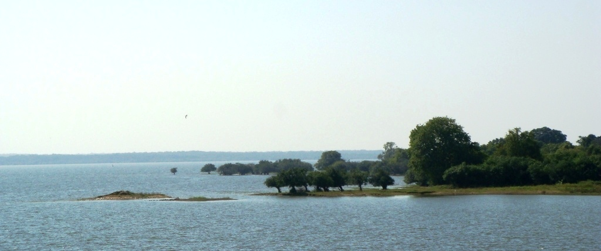
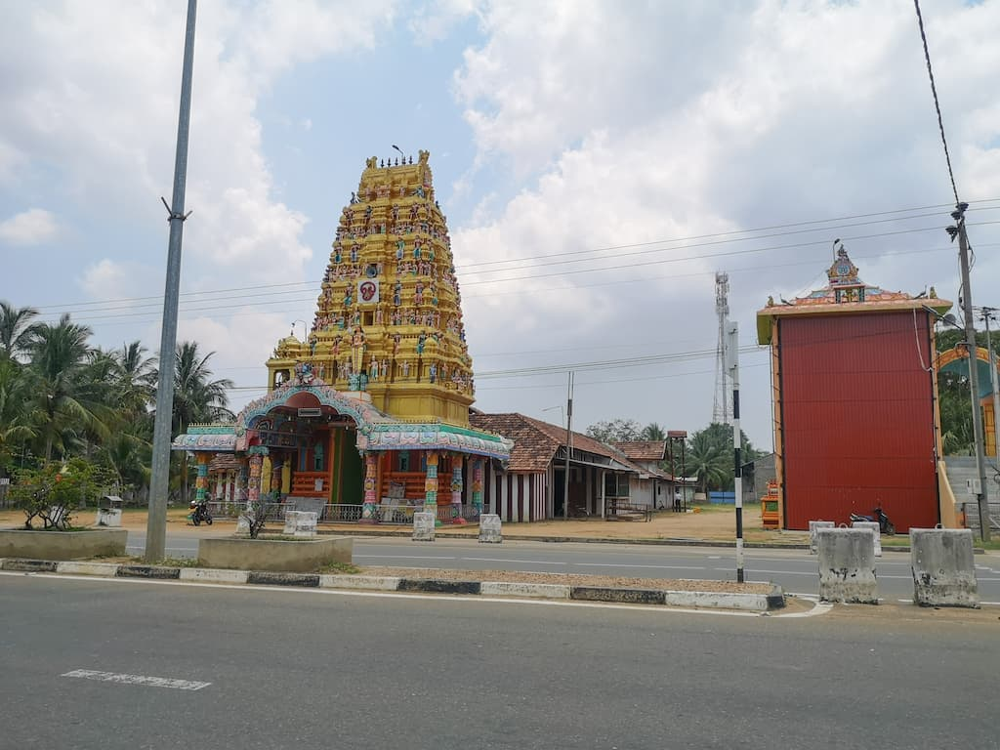
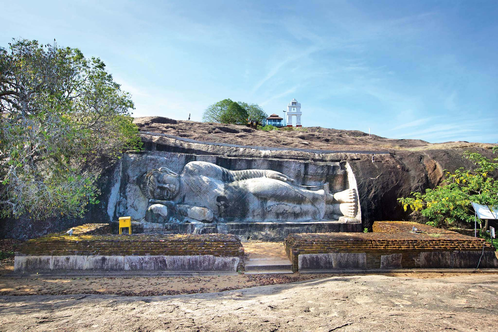

Nallur Temple

Pilgrims from all parts of the world visit Nallur Temple. The prime feature of this Nallur Temple is the golden arch and the extended Gopuram. People visit here mainly to explore this Gopuram. The premise of this temple was built during the eighteenth century. It was in the year 1620 when the Portuguese destroyed the old construction of this building which was constructed during the regime of Tamil Kings. This temple is now considered as the primary place to hold any type of religious festival.
Jaffna Fort

Among the top tourist places to visit in Jaffna Sri Lanka, Jaffna Fort is considered as one of the major ones. This fort was established in the year 1618 by the people of Portuguese Origin during the Portuguese invasion in Jaffna. This fort is positioned near the city of Karaiyur. This fort is also famous as Fortress of Our Lady of Miracles of Jaffna. During the year 1658, this fort was conquered by the Dutch invaders and it was again in the year 1795 when this fort was again taken back by the British. From the period 1986 to 1995 this fort was captured by LTTE and it was recaptured by the Sri Lanka Army in the year 1995.
Jaffna Library

Jaffna Library is considered as one of the most significant historical and important places to visit in Jaffna. This library was opened in the year 1959. It was established by Alfred Duraiappah who was Mayor of Jaffna at that time. The construction of this library was similar to the Indo-Saracenic style. A tragedy happened with this library and it was burnt during the civil war in Jaffna in the year 1981. At this time this library was considered as the biggest library in Asia. It possessed almost 97000 books and manuscript.
Iranamadu Tank
Iranamadu Tank is located 8 km from Kilinochchi, Sri Lanka. It is one of the largest man-made reservoirs in Sri Lanka. The water capacity of the reservoir is approximately 131.4 mcm, with a catchment area of 227 square miles. Most of the tourists start to visit Iranamadu Tank on the way to the north of Sri Lanka. The Iranamadu Tank provides irrigation facilities to the people around the Kilinochchi district. Most of the people living in Kilinochchi depend on agriculture for their livelihood. The Iranamadu Tank is a boon for those people to do Two crops farming.
Kandasamy Temple
Kilinochchi Kandasamy Kovil is a Hindu temple. It’s located on the A9 road in Kilinochchi Town. This is a Murugan temple with a colorful tower.
Mannar Island

Mannar Island is natures bounty in Sri Lanka. A causeway connects this island with the Sri Lankan
mainland. Covered through sands and flora, it has the total area of approximately 50 square
kilometers. Tourists usually visit the interesting spots like Adam’s Bridge limestone shoals chains
that is a connecting point between Mannar, Sri Lanka with Tamil Nadus Pamban Island, also called
Rameswaram Island. Geographical findings describe that it used to be an erstwhile bridge to connect
India and Sri Lanka centuries ago.
White sands, palm trees, gulls, and terns seek the attention of visitors here. Tourists enjoy
exploring the fishing boats. Presence of ancient baobab trees which were actually native to Africa
and believed to have been planted by the Arab merchants here several centuries ago, keep the
visitors hooked.
Travelers spend a good time exploring the ruins of the crumbling colonial edifices which Portuguese,
Dutch, and British rulers had built several centuries ago during their respective periods. Mannar
used to be an affluent pearling center before LTTE hostage leading to the cold war for many decades.
Today, it is the poorest of the Sri Lankan islands but has once again started gaining prosperity.
Thanthirimale

One of the best places to visit in Mannar, Sri Lanka, the old village of Thanthirimale or the
Tantirimale is sought after by the tourists, especially Buddhists who are seeking to explore the
ancient Buddhist temples.
Its location near the rocks make this place sought after amongst the tourists. Besides the old
village, Thanthirimale Stupa and Sri Maha Bodhi plant to Bo Tree et al are great places for
exploration as a tourist and a devoted Buddhist
Thiruketheeswaram Kovil

Thiruketheeswaram Kovil Hindu shrine is also famous as Ketheeswaram Temple or Tirukktsvaram in Sri
Lanka. One of the ancient Hindu temples in Mannar area, it is always visited by the Hindu devotees.
It overlooks neighboring Indias ancient Tamil port towns of Manthai and Kudiramalai.
Now in its ruins, although got restored and renovated many times over the centuries, this temple is
visited by the worshippers of Shiva deity. Due to the ancient value of this temple, it is equally
visited by explorers, including Hindu devotees and common travelers. This place surely tops the list
of top places to visit in Mannar for all kinds of travelers!
Mullaitheevu beach

The town is situated between the sea water and lagoon. This entire area was completely destroyed by Tsunami and then the deadliest, final stage of the war caused rampages and made it to rubbles. It’s very good to see the developments taking place and the courageous societies at least once. Even though there are not many facilities, there is a possibility to have a brisk swimming.
Madukanda Vihara

Also known as Madukanda Sri Dalada Viharaya, Madukanda Vihara is a historic Buddhist temple. The
historic religious site is located within the Madukanda village, which is at a distance of 4
kilometres from Vavuniya. The Madukanda village and the sacred temple date back to at least 4th
century AD.
As per the historians, during the journey of the holy Buddha’s tooth relic, Madukanda was the 4th
resting point. It also happens to be the first location where the first Dalada Maligaya (House of
the Sacred Tooth Relic) was founded. Pilgrims who intend to follow the original trail often stop at
Madukanda Vihara for rest.
Madukanda Vihara is the relic house where the sacred tooth was venerated until the temple in
Anuradhapura was built. One can witness fine craftsmanship in the form of intricate carvings made on
the granite stepping stones. In addition to the temple, one can even visit the Stupa nearby which
lacks the adornments as compared to the Vihara but is of equal historical value.
Wasgamuwa National Park

One will have to travel about 75 kilometres from Vavuniya to reach the Wasgamuwa National Park
located in Polonnaruwa district but it will be totally worth the effort. The natural reserve of
Wasgamuwa National Park harbors untamed wildlife and you can view herds of buffaloes and elephants
freely roaming around the vicinity.
Considering that the influx of tourists is pretty slim at the Wasgamuwa National Park, the region is
never crowded. Owing to the less commercialization, visitors can truly enjoy a genuine safari visit.
Mihintale Peaks

The Mihintale Peaks are located at a distance of about 48 kilometres from Vavuniya. It is a part of
Anuradhapura, which forms the religious center of Sri Lanka. The Mihintale mountain peak is known to
be the ‘Cradle of Buddhism’ as the religion took roots from here.
In Sinhalese, Minitale stands for “the plateau of Mahinda.” It is said that Mihinda (or Mahendra)
the son of the Mauryan emperor Ashoka, first landed at Mihintale. It is from here that the son
carried out his father’s order of spreading Buddhism on Sri Lankan soil.
At the foothills of the Mihintale peak, one can visit the oldest hospital in the world, which is
locally known as Vedahala. Along the Mihintale peaks, there are many other interesting places such
as the Kantaka Chetiya, Ambasthala Dagaba, Mihindu Guhawa, Aradhana Gala and three ponds, namely,
Kaludiya Pokuna, Naga Pokuna, and Simha Pokuna. One has to climb exactly 1840 steps cut through
rocks to reach the Maha Stupa of Mihintale.
In the months of June, Poson Poya is celebrated at this site, which results in a great inflow of
tourists and pilgrims from all over. The festival marks the birth of Buddhism and the arrival of
Mahinda.